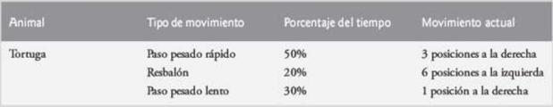
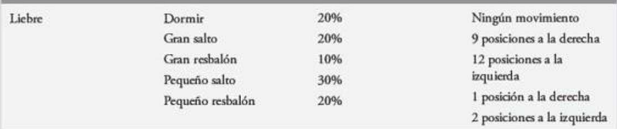

(Simulación: La tortuga y la liebre) En este problema, usted recreará uno de los momentos realmente grandiosos en la historia, a saber la clásica carrera de la tortuga y la liebre. Utilizará la generación de números aleatorios para desarrollar una Simulación de este memorable suceso.
Nuestros competidores empezarán la carrera en la posición 1 de 70 posiciones. Cada posición representa a una posible posición a lo largo del curso de la carrera. La línea de meta se encuentra en la posición 70. El primer competidor en llegar a la posición 70 o más allá recibirá una cubeta llena con zanahorias y lechuga frescas. El recorrido se abre paso hasta la cima de una resbalosa montaña, por lo que en ocasiones los competidores pierden terreno.
Un reloj hace tictac una vez por segundo. Con cada tic del reloj, su secuencia de comandos debe ajustar la posición de los animales de acuerdo con las reglas de la siguiente figura.


Notas:
a) Imprimir PUM!!! Y ARRANCA!!! al empezar la carrera.
b) Colocar H en las posiciones de la liebre y T en las posiciones de la tortuga.
c) Cuando la liebre y la tortuga estén en la misma posición (durante un mismo ciclo), colocar OUCH!!! en la posición de la liebre (representando que la tortuga mordió a la liebre).
d) Si la tortuga gana imprimir LA TORTUGA CANA!!! YAY!!!. Si la liebre gana La liebre gana. Que mal. En caso de empate Es un empate..